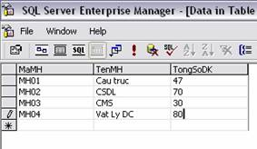
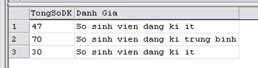
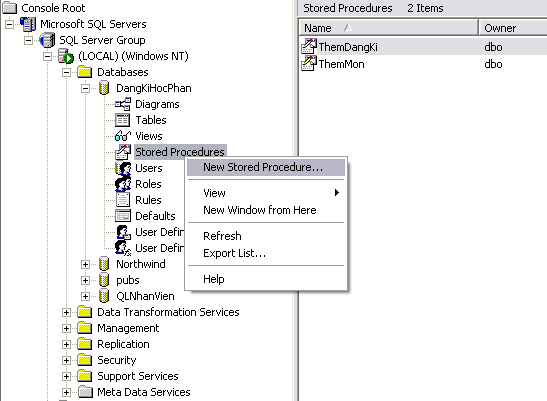
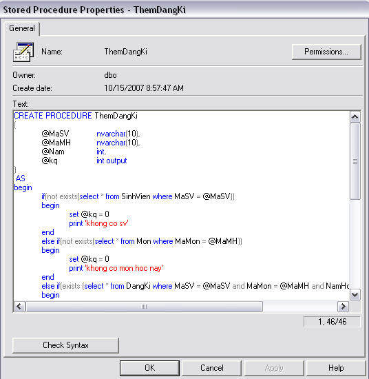
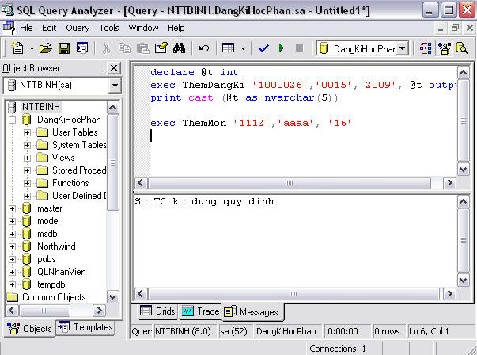

lab4: ngôn ngữ T_SQL, store procedure
Giới thiệu
T_SQL là ngôn ngữ SQL mở rộng dựa trên nền SQL chuẩn. T_SQL được chia làm 3 nhóm:
- Data Defination Language(DDL): Là những lệnh để quản lý một database.
- Data Control Language(DCL): là những lệmh quản lý quyền truy cập trên từng đối tượng.
- Data Manipulation Language(DML): là những lệnh dùng để xử lý dữ liệu.
1. Cú pháp lệnh
1. Khai báo biến
Biến phải được khai báo trước khi sử dụng. Biến trong TSQL có hai phạm vi: biến toàn cục, biến cục bộ.
Tất cả các biến được tạo ra trong các store procedure là biến cục bộ, biến toàn cục là biến dành riêng của SQL Server và nó không thể được gán giá trị bởi người dùng.
Cú pháp khai báo biến:
Declare @varname1 datatype1, @varname2 datatype2,....
Ví dụ 1:
declare @HoGV nvarchar(50), @tongsotiet int
Ví dụ 2:
declare @ClassIdent nvarchar(10)
SET @MaGV = 'GV01'
SELECT HoGV, TenGV
from GiaoVien
WHERE MaGV = @MaGV
2. Định nghĩa một store procedure
Cú pháp định nghĩa một store procedure
CREATE PROCEDURE StoreName
(
@varname1 datatype1,
@varname2
datatype2,
@varname3
datatype3,
....
)
AS
{SQL_statement | statement_block}
GO
3. Chú thích
Trong T_SQL dùng dấu - trước dòng muốn chú thích
4. Lệnh in kết quả ra màn hình
Trong T_SQL dùng lệnh print 'chuỗi cần in'. Nếu muốn in một biến kiểu khác chuỗi ra màn hình ta dùng hàm cast để chuyển kiểu
Ví dụ:
declare @t1 int, @t2 int, @t int
set @t1 = 2
set @t2 = 3
set @t = @t1 +@t2
print cast(@t as nvarchar(2))
2. các cấu trúc điều khiển, cấu trúc lặp
1. IF....ELSE
IF Boolean_expression { sql_statement | statement_block }
[
ELSE
{ sql_statement | statement_block }]
Ví dụ:
if (exists (select MaGV from GiaoVien where MaGV = 'GV04'))
print 'giao vien nay da ton tai trong csdl'
2. CASE
CASE input_expression
WHEN when_expression THEN result_expression
[ ...n ]
[
ELSE else_result_expression
]
ENDVí dụ:
SELECT TongSoDK, 'Danh Gia' =
CASE
WHEN TongSoDK <50 THEN 'So sinh vien dang ki it'
WHEN TongSoDK <80 THEN 'So sinh vien dang ki trung binh'
ELSE 'So sinh vien dang ki dong'
END
FROM MonHocDữ liệu:
Kết quả:

3. WHILE
WHILE Boolean_expression
{ sql_statement | statement_block }
[ BREAK ]
{ sql_statement | statement_block }
[ CONTINUE ]Ví dụ:
WHILE (SELECT avg(TongSoDK) FROM MonHoc) < 45
BEGIN
UPDATE MonHoc
SET TongSoDK = TongSoDK + 5
END
3. Store procedure
1. Định nghĩa một store procedure có tham số đầu vào
Cú pháp store procedure có tham số đầu vào
CREATE PROCEDURE StoreName
(
@varname1 datatype1,
@varname2
datatype2,
@varname3
datatype3,
....
)
AS
{SQL_statement | statement_block}
GO
2. Store Procedure có tham số đầu vào và tham số đầu ra.
Cú pháp store procedure có tham số đầu vào và đầu ra
CREATE PROCEDURE StoreName
(
@varname1 datatype1,
@varname2
datatype2,
@varname3 datatype3 OUTPUT,
@varname3 datatype3 OUTPUT,
....
)
AS
{SQL_statement | statement_block}
GO
3. Ví dụ với cơ sở dữ liệu Đăng kí học phần
Ví dụ 1: viết thủ tục để thêm môn học vào bảng Mon với quy định mã môn học là duy nhất và tổng số sinh viên đăng kí phải lớn hơn hoặc bằng 0, có kiểm tra ràng buộc về khóa
CREATE PROCEDURE ThemMonHoc
(
@MaMon nvarchar(10),
@TenMon nvarchar(50),
)
AS
Begin
if(exists(select * from MonHoc where MaMH = @MaMon))
print 'Mon hoc nay da ton tai'
else if(@TongSoDK < 0) print 'So khong hop le'
else
begin
insert into MonHoc(MaMH, TenMH, TongSoDK) values (@MaMon, @TenMon, @TongSoDK)
print 'Them thanh cong'
end
end
GO
Thực thi:
exec ThemMonHoc 'MH01', 'Lap trinh Java', 50
Ví dụ 2: Viết thủ tục thêm một bô vào bảng chấm công
CREATE PROCEDURE ThemPhanCong
(
@MaGV nvarchar(10),
@MaMH nvarchar(50),
@SoTiet int,
@Buoi nvarchar(50),
@Ngay datetime,
@kq int output
)
AS
Begin
if(exists(select * from BangChamCong where MaMH = @MaMH and MaGV = @MaGV and Buoi = @Buoi and Ngay =@Ngay))
begin
print 'trung khoa chinh'
set @kq = 0
end
else if(not exists(select * from MonHoc where MaMH = @MaMH) or not exists (select * from GiaoVien where MaGV = @MaGV)
begin
print 'vi pham rang buoc khoa ngoai'
set @kq = -1
end
else
begin
insert into BangChamCong(MaGV, MaMH, SoTiet, Buoi, Ngay)
values (@MaGV, @MaMH, @SoTiet, @Buoi, @Ngay)
print 'Them thanh cong'
set @kq = 1
end
end
GO
Thực thi:
declare @t int
exec ThemPhanCong 'GV01', 'MH01', 4, 'Sang', '12/3/2008', @t output
print cast(@t as nvarchar(3))
Ví dụ 3:
Viết thủ tục tính tiền giảng dạy cho giáo viên. Biến đầu vào cho thủ tục là mã giáo viên. Biến đầu ra là số tiền. Công thức tính như sau:
Tổng tiền = Tổng số tiết * 20.000.
Tổng số tiết = tổng số tiết thực dạy *1.5 nếu như số sinh viên đăng kí môn học đó > 80 sinh viên của từng môn học mà giáo viên đó tham gia giảng dạy.
CREATE PROCEDURE TinhTienGiangDay
(
@MaGV nvarchar(10),
@TongTien int output
)
AS
begin
declare @t1 int, @t2 int
select @t1=sum(SoTiet) * 1.5
from ChamCong cc, MonHoc m
where cc.MaMH = m.MaMH and m.TongSoDK >80 and cc.MaGV = @MaGV
select @t2=sum(SoTiet)
from ChamCong cc, MonHoc m
where cc.MaMH = m.MaMH and m.TongSoDK <80 and cc.MaGV = @MaGV
set @TongTien = (@t1 + @t2)*20000
end
Thực thi:
declare @TongTien int
exec TinhTienGiangDay 'GV01', @TongTien output
print cast(@TongTien as nvarchar(3))
4. Viết thủ tục trong SQL-Server
1. Chọn Database -->chọn cơ sở dữ liệu muốn viết thủ tục -->chuột phải Stored Procedure --> chọn New Stored Procedure.

2. Viết mã.

3. Thực thi.

5. bài tập
1. Trên cơ sở dữ liệu DeAn và NganHang và QuanLyHocVien viết các store procedure.
-
Viết store procedure cho việc thêm dữ liệu vào các bảng. Nếu thành công trả về 1, ngược lại trả vầ 0.
-
Viết các Store Procedure cho việc cập nhật dữ liệu cho các bảng. Nếu thành công trả về 1. Ngược lại trả về 0.
-
Viết các store Procedure cho việc xóa, dữ liệu trong các bảng. Nếu thành công trả về 1, ngược lại trả về 0.
-
Cập nhật tên đề án, nếu đề án tồn tại trong bảng DeAn, cập nhật và trả về 1, ngược lại trả về 0.
2. Trên cơ sở dữ liệu DeAn và NganHang viết các store procedure có tham số đầu ra như sau:
-
Đưa vào mã nhân viên, nếu nhân viên này tồn tại thì trả về lương của nhân viên đó, nếu không tìm thấy trả về 0.
-
Đưa vào mã phòng, nếu không tìm thấy phòng đó trả về 0, ngược lại trả về lương trung bình của phòng đó.
-
Đưa vào mã đề án, nếu tìm không thấy trả về 0, ngược lại trả về số giờ làm trung bình của đề án đó.
-
Đưa vào số tài khoản, nếu tài khoản gởi đó không tồn tại, trả về 0, ngược lại trả về số tiền gởi và mã khách hàng của người đó.
-
Đưa vào mã khách hàng, nếu mã khách hàng đó không tồn tại, trả về 0, ngược lại trả về tên và địa chỉ của khách hàng đó.
-
Tính trung bình tài khoản gởi.
-
Tìm điểm cao nhất của học viên.
-
Thêm một bộ dữ liệu vào tài khoản vay, kiểm tra sao cho một khách hàng không được mở nhiều hơn 3 tài khoản vay. Thêm thành công hay không được lưu vào biến trạng thái đầu ra.
-
Viết thủ tục đưa vào mã ngân hàng, tính tổng tài sản của ngân hàng của ngân hàng đó.